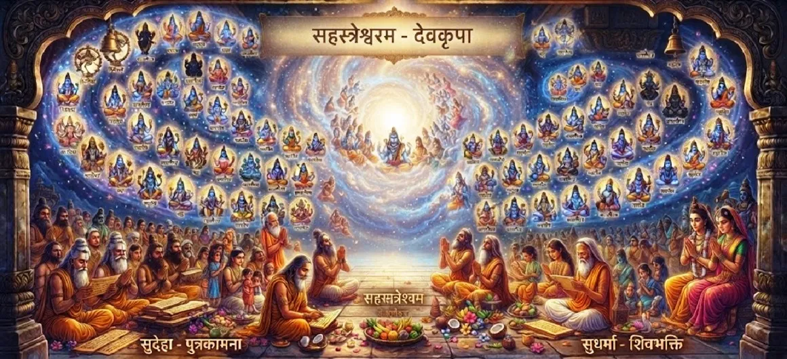

शिव भक्तों की महिमा
कोटिरुद्र संहिता का अड़तीसवां अध्याय भगवान शिव की सेवा और भक्ति के लिए अपना जीवन समर्पित करने वालों पर बरसने वाली उत्कृष्ट महिमा, स्थिति और दिव्य कृपा का जश्न मनाता है।
यह अध्याय अद्वितीय आध्यात्मिक गहराई और शाश्वत संबंध को स्पष्ट करता है जो एक सच्चा शिव भक्त महादेव के साथ साझा करता है।
अध्याय 38 की मुख्य बातें
दैवीय स्थिति
शिवभक्तों की ऊँची प्रतिष्ठा।
शाश्वत अनुग्रह
महादेव का भक्तों के प्रति निस्वार्थ प्रेम।
दैवीय सुरक्षा
शिव अपने सच्चे अनुयायियों की किस प्रकार रक्षा करते हैं।
हृदय की पवित्रता
सच्चे भक्त के आवश्यक लक्षण.
आध्यात्मिक अनुनाद
शिव की ऊर्जा के साथ सामंजस्य बनाकर रहना।
मुक्ति का मार्ग
संपूर्ण समर्पण में पाया गया अनोखा अनुग्रह।
इस अध्याय में मुख्य विषय
शिवभक्तों का महिमामय स्वरूप
यह खंड शिव भक्तों को सबसे भाग्यशाली आत्माओं के रूप में वर्णित करता है। शिव को अपने हृदय में रखकर वे सांसारिक संसार से परे चले जाते हैं।
उनका अस्तित्व ही विश्व के लिए वरदान है।
महादेव की कृपा और सुरक्षा
महादेव को एक प्रेमपूर्ण रक्षक के रूप में दर्शाया गया है जो अपने भक्तों पर सतर्क नजर रखता है, उन्हें नुकसान से बचाता है और उन्हें प्रकाश की ओर मार्गदर्शन करता है।
उनकी कृपा आस्थावानों के लिए परम ढाल है।
एक सच्चे भक्त के गुण
सच्ची भक्ति की विशेषता विनम्रता, करुणा, अटूट विश्वास और बाहरी परिस्थितियों की परवाह किए बिना निरंतर शिव पर केंद्रित मन है।
ये गुण आत्मा की परिपक्वता को दर्शाते हैं।
परमात्मा के साथ साम्य
अध्याय इस बात पर जोर देता है कि एक भक्त के लिए शिव दूर नहीं हैं। निरंतर स्मरण और प्रेम के माध्यम से, वे दिव्य चेतना के साथ सतत मिलन में रहते हैं।
वे भीतर और बाहर शिव को पाते हैं।
संपूर्ण समर्पण की शक्ति
शिव के प्रति पूर्ण समर्पण जीवन की यात्रा को सरल बनाता है। यह अहंकार को विघटित करता है और भक्त के माध्यम से दिव्य इच्छा को प्रकट करने की अनुमति देता है।
यह समर्पण ही मुक्ति की कुंजी है।
अध्याय 39 की ओर
भक्त की महिमा की खोज को समाप्त करते हुए, पाठ आगामी अनुष्ठानों का परिचय देता है, जो महा शिवरात्रि के महत्व पर अध्याय 39 की ओर ले जाता है।
पाठकों को शिवरात्रि की पवित्र रात का पता लगाने के लिए आमंत्रित किया जाता है।
अध्याय 38 की मुख्य शिक्षाएँ
दिव्य पसंदीदा
शिव के अनुयायियों की विशेष स्थिति
सतर्क प्रेम
शिव शाश्वत संरक्षक के रूप में।
आत्मा की पवित्रता
एक सच्चे भक्त के हृदय को विकसित करना।
आंतरिक संघ
हृदय में शिव के साथ रहना।
पूर्ण समर्पण
दिव्य प्रवाह के लिए अहंकार को मुक्त करना।
ईश्वरीय कृपा
ईमानदार के लिए अंतिम समर्थन.
आध्यात्मिक चिंतन
अध्याय 38 महादेव और उनके भक्तों के बीच सुंदर, पारस्परिक संबंध के प्रमाण के रूप में कार्य करता है। इससे पता चलता है कि शिव कोई दूर के, डरावने देवता नहीं हैं, बल्कि एक अत्यंत दयालु पिता हैं जो उन्हें याद करने वालों का ख्याल रखते हैं। शिव भक्त होने का अर्थ दिव्य प्रेम के शाश्वत आलिंगन में रहना है। जैसे ही हम इन शिक्षाओं पर विचार करते हैं, आइए हम एक सच्चे भक्त के गुणों को अपनाने का प्रयास करें - विनम्रता विकसित करना, अपने विश्वास को गहरा करना और शिव की उपस्थिति के बारे में निरंतर जागरूकता के साथ जीना। ऐसा करने पर, हम उनकी कृपा के जीवंत माध्यम बन जाते हैं, अपनी भक्ति में शक्ति, शांति और परम मुक्ति पाते हैं।
अध्याय 38 का संदेश जीना
आंतरिक विनम्रता विकसित करें और पहचानें कि हर पल सेवा और स्मरण के माध्यम से महादेव को अपना जीवन वापस अर्पित करने का एक मौका है।
प्रत्येक प्राणी में शिव की उपस्थिति को देखें और सभी के साथ उस करुणा का व्यवहार करें जो एक सच्चे भक्त में होती है।
यह जानते हुए कि प्रभु की कृपा हमेशा आपके साथ है, अटूट विश्वास बनाए रखें।
प्रमुख आध्यात्मिक अवधारणाएँ
भगवान शिव का एक समर्पित भक्त।
प्रभु का अनर्जित प्रेम और समर्थन।
अहंकार को सर्वोच्च इच्छा पर छोड़ना।
अपने बच्चों के अभिभावक के रूप में शिव की भूमिका।
ईश्वर के प्रति निरंतर जागरूकता में रहना।
भक्ति और विश्वास से विकास.
अध्याय सारांश
कोटिरुद्र संहिता अध्याय 38 महादेव के हृदय में उनके विशेष स्थान की व्याख्या करते हुए शिव भक्तों की महानता का सम्मान करता है। इसमें सुरक्षात्मक अनुग्रह, विनम्रता और विश्वास के आवश्यक गुणों और समर्पण की परिवर्तनकारी शक्ति का विवरण दिया गया है, जिसकी परिणति अध्याय 39 में महा शिवरात्रि के पवित्र अनुष्ठानों का पता लगाने के निमंत्रण में हुई है।
अक्सर पूछे जाने वाले प्रश्न
1. शिव पुराण में शिव भक्तों को महान क्यों माना गया है?
शिव भक्तों को महान माना जाता है क्योंकि वे अपनी चेतना को सर्वोच्च के साथ जोड़ते हैं, सांसारिक मोह-माया से परे जाते हैं और महादेव की शाश्वत कृपा और सुरक्षा प्राप्त करते हैं।
2. यह अध्याय पिछले अध्याय का अनुसरण कैसे करता है?
अध्याय 37 में सहस्रनाम जप के लाभों की व्याख्या करने के बाद, यह अध्याय उन लोगों की स्थिति और विशेषताओं पर केंद्रित है जो उस भक्ति को अपनाते हैं।
3. एक सच्चे शिव भक्त के गुण क्या हैं?
एक सच्चे भक्त के पास विनम्रता, अटूट विश्वास, करुणा और मन होता है जो लगातार भगवान शिव की याद में लीन रहता है।
4. इसके बाद अगला अध्याय कौन सा है?
अगला अध्याय अध्याय 39 है, 'महाशिवरात्रि का पालन'।
"शिव का सच्चा भक्त निरंतर कृपा में रहता है, महादेव के सुरक्षात्मक हाथ से पकड़ा जाता है और शाश्वत प्रकाश की ओर निर्देशित होता है।"
कोटिरुद्र संहिता के माध्यम से जारी रखें
अध्याय 38 शिव भक्तों की महानता का जश्न मनाता है। अध्याय 39, महा शिवरात्रि का पालन जारी रखें।